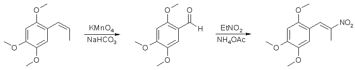

2,4,5-Trimethoxyphenyl-2-nitropropene: An alternative approach
by Uemura
Introduction
There was around in the Hive a lengthy and comprehensive thread on the preparation of the 2,4,5-trimethoxy- phenyl-2-nitropropene
based on the pseudonitrosite approach[1]. The nitrosite rxn is a bit 'picky' and alternatives could be
dreamed. The following is a summary on a different route to the TMA2-P2NP. Starting point is the asarone, which can be obtained via
fractional destillation of Indian calmus oil.
Procedure
2,4,5-trimethoxy-benzaldehyde[2]
58g Sodium hydrogen carbonate (NaHCO3) are disolved in 800 ml tap water with magnetic stirring in a 2l beaker. 30g KMnO4 are
dissolved in 500ml tap water under stirring and kept warm at 50�C on a water bath in a seperate beaker. The NaHCO3 solution is
heated up to 90�C (max temp of heater plate) and 20ml of asarone are added. The magnetic stirring is set to 700rpm (heavy stirring).
From a dropping funnel the 500ml warmed KMnO4 are added continously to the almost boiling and stirred mixture during 35 minutes.
For each drop MnO2 immediately appears, the steam of the mixture smells heavily from asarone, later from the aldehyde as well, vent
the steam out (or use a fume hood).
During the addition of the oxidizer, prepare approx 500ml boiling water, get thick gloves and setup for a hot-buchner vacuum
filtration. When the addition of the KMnO4 solution has been completed, the dark brown mixture is immediately vacuum filtered as
hot as possible. It is essential to filter the mixture hot (as hot as possible) and to prevent any MnO2 coming into the filtrate.
Use two filter papers and wet well before pouring the hot mix into the funnel[3]. A clear hot yellow
filtrate is collected. The first filtration (about one liter) is poured in a clean beaker and set aside. Into the funnel 300ml
boiling hot water is added, carefully mixed with the dark MnO2 and vacuum is applied again. The second filtrate is again poured in
a different beaker and set aside. A second wash may follow with the rest of the hot water. Use a third beaker for the little yellow
filtrate. The three beakers are allowed to cool down over night, most of the product appears in the first filtrate as yellow nice
needles. The first wash contains normally a reasonable amount of aldehyde, the second wash mostly give no product anymore. In the
morning the aldehyde is vacuum filtered and dried in a desicator (no vac required) or on a clay plate. It can be used for the next
rxn as it is. Recrystallisation fron little hot EtOH gives an almost white pure product of long needles. A 1:1 mix of dH2O and
EtOH can also be used for recristallisation. Yield varies considerably[4]. Expect something between
25% and 45%. mp. is 110-111�C
2,4,5-trimethoxy-phenyl-2-nitropropene[5]
7.6g 2,4,5-trimethoxy-benzaldehyde is disolved in 27ml nitroethane in a 100ml flask under mag strirring. 1.7g ammonium acetate
(anhydrous) is added and the flask is heated for 2.5 hours in a boiling water bath. The mixture turns from yellow to orange and to
red. After the 2.5 hrs has been elapsed, a vacuum distillation follows. The remaining nitroethane is removed under moderate
pressure (110 Torr). It comes over cloudy together with the separated water. After cooling the vacuum is removed, the oily orange
content of the flask poured into a beaker and the flask is washed three times with 8ml boiling MeOH each. The combined washes
together with the oily residue are stirred with a glas rod. Under heating the P2NP crystallises as dark yellow crystals
[6]. The crystals are filtered off, the mother liquor is kept cool over night to get a second
crystallisation. mp is 100-101�C. Re-crystallisation is done with little hot MeOH if needed. Yield something around 50-60% based
on the aldehyde.

References
[1] See Novel Discourse at The Hive, 'Low down on Pseudonitrosites' from Antibody2
[2] Ber. 39, 1211, (1906) Fabinyi
[3] If any MnO2 comes with the filtrate, continue! Do not abort the filtration. The MnO2 can be removed later during a
recrystallisation.
[4] Fabinyi (2) gives 50%. When Uemuras 'Karma' was optimal, he got 45%. This rxm seems to be sensitive on temp,
stirring and other factors TBD.
[5] Shulgin, #158, Pihkal
[6] This P2NP is much more dense than the one from the nitrosite route.
|